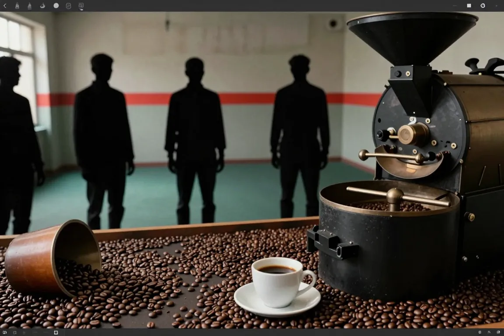

Фото низкого качества с пустыми местами, красный предупреждающий текст, чёрные провалы, безликие фигуры и обрывки старой 3D-графики или веба. Настроение — странная память о сне. Выросло на Tumblr, Reddit и Twitter.

Главная идея
Сделайте знакомую вещь неправильной в одной мелочи и дайте плохому качеству картинки нести тревогу.
Принципы дизайна
Берите фото низкого разрешения (шириной 320–640px), увеличенное без сглаживания, с видимыми блоками JPEG.
Сдвигайте цвет фото на 10–20% к жёлто-зелёному или маджента.
Ставьте один чёрный прямоугольник (провал) на 5–15% кадра поверх важного места.
Набирайте одну строку красного (#E01B1B) текста 14–24px, например число или короткую фразу.
Добавляйте одну неправильную деталь: лицо без черт, второй горизонт или дверь без стены.
Добавляйте в углу штамп даты или плюс размером 12px.